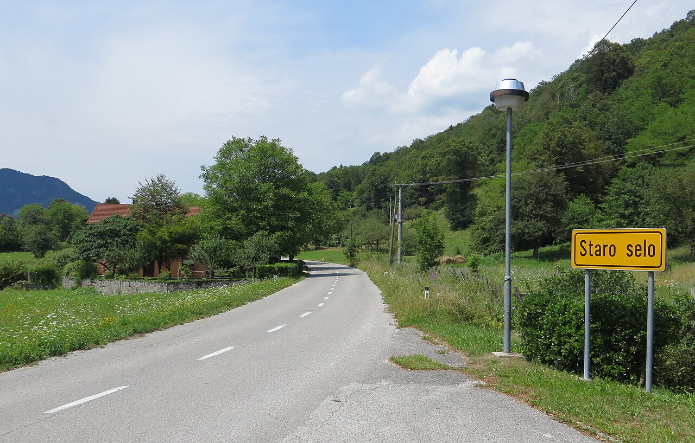
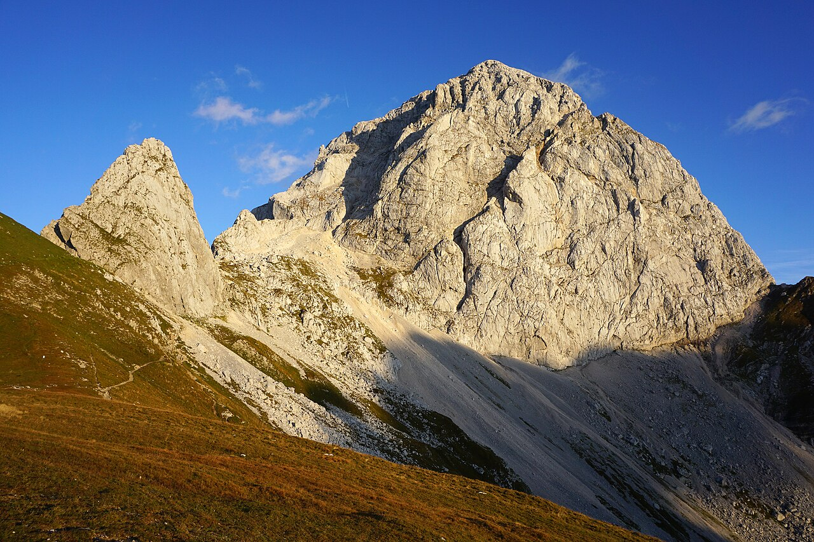
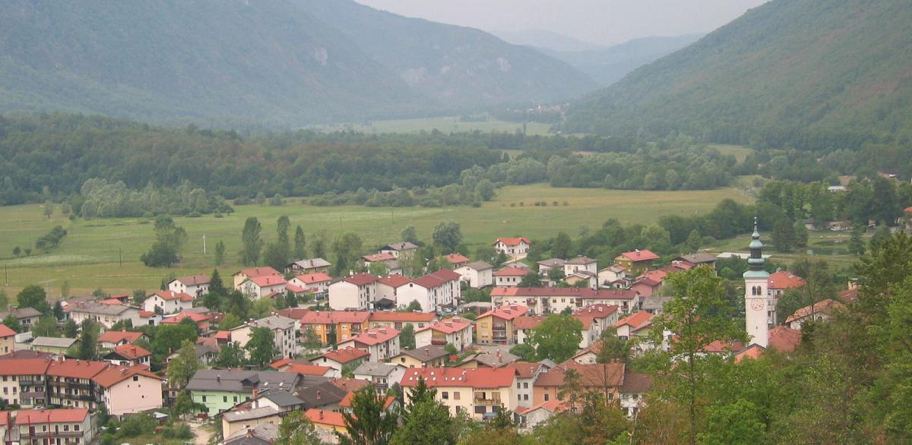

Service
Wed–Sun, dinner only[1]
The restaurant is the schedule. Every other decision — bed, road, gorge, taxi — collapses out of one fixed window: Hiša Franko's 20:00 last seating on a weekend that does not exist between January and mid-February[2].

Time is allotted not measured. The orange band is the unbreakable buffer — shower, dress, breathe — and the turquoise stamp is the only block that cannot move.
Either you sleep on the lane (two beds), within a taxi ride (eight character stays), or you accept that "near" the restaurant means thirty-five minutes on foot in the dark.
Staro Selo's single lane — pop. ~150 — has exactly two addresses that qualify.
Anything past the lane needs a taxi — but the village stays double as trailheads.
Tripadvisor's "near Hiša Franko" list opens at 3.2 km. That's 35–55 minutes on an unlit country lane.
The buffer ends two activities. Pick a four-hour morning anchor and a sub-90-minute afternoon visit — anything else collides with the 17:00 wall.


Every place that surfaces as a character stay is also the start of a trail. Pick the bed near the morning, not near the table.